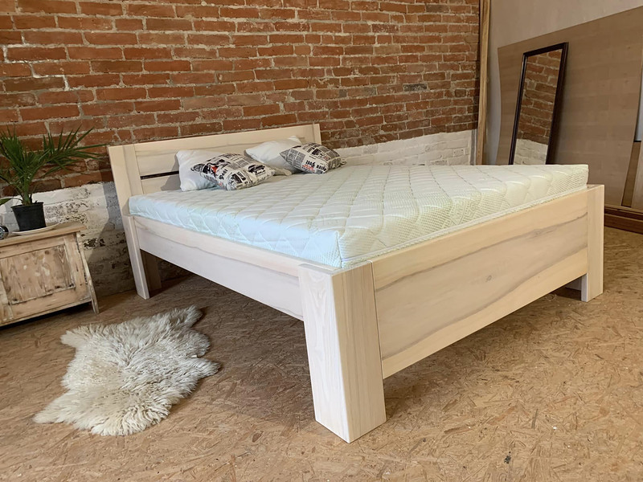
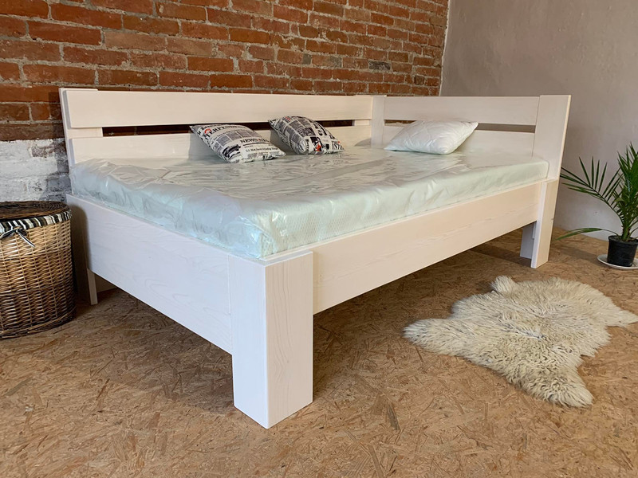
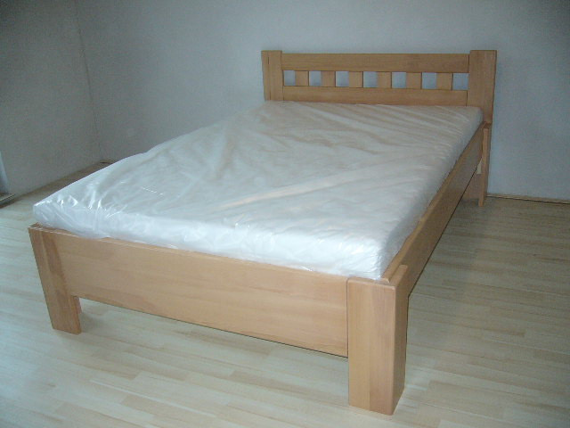
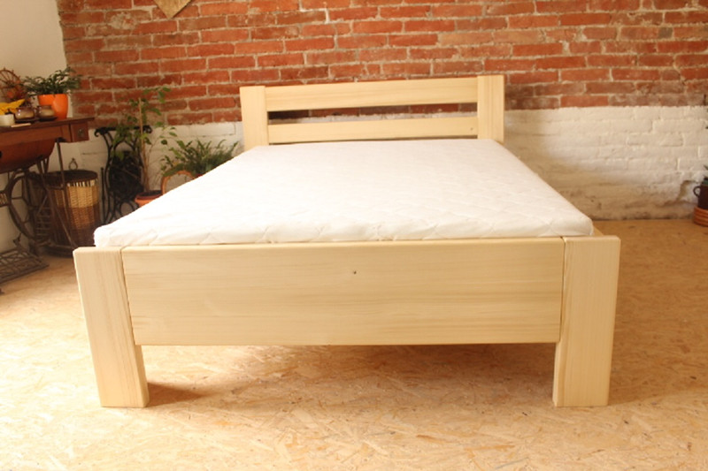
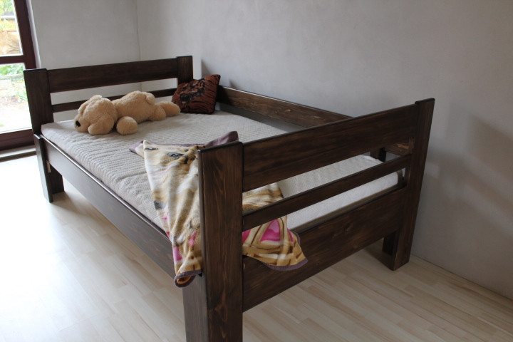
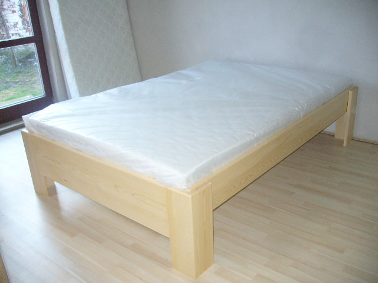
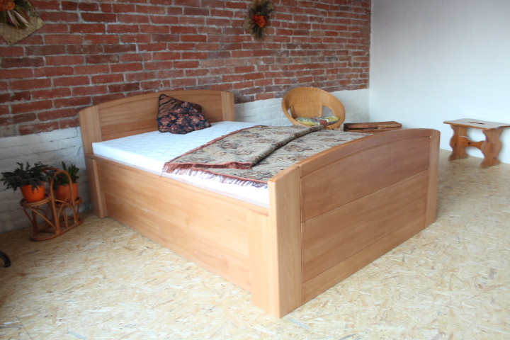

Matrace Gita
studená pěna
výška 13 cm · do 130 kg · tuhost T3
4 100 Kč
Postele o šířce 120 a 140 cm, s úložným prostorem nebo výsuvnou přistýlkou.

Jeden a půl lůžko z tvrdého materiálu jasan masiv v moření Nordic styl v dekoru podobný dub sonoma.

Studentská postel z materiálu smrk masiv s tloušťkou 28mm v bílém moření, kdy prosvítají leta dřeviny.

Studentské jeden a půl lůžko z masivního buku o tl.28mm.

Robustní studentské jeden a půl lůžko z masivního smrku je možné i z borovice za stejnou cenu.

Studentská postel v materiálu masivní smrk, možnost moření v dekoru ořech za příplatek 900 Kč.

Dvoulůžko malé nebo-li jeden a půl lůžko s nízkými čely, materiál: smrk/borovice - dle přání.

Robustní jeden a půl lůžko z masivního buku pařeného ( na fotu moření dekor Curry).
Bezzónové matrace pro děti a dospívající, vhodné pro správný růst páteře.
studená pěna
výška 13 cm · do 130 kg · tuhost T3
4 100 Kč

studená pěna, výška 20 cm
výška 20 cm · do 130 kg · tuhost T3
6 740 Kč

vyšší tvrdost
výška 16 cm · do 130 kg · tuhost T3 / T4
4 520 Kč
Máme šířky 120 a 140 cm. Další šířku vyrobíme na přání.
Ano. Vyrábíme verze s úložným prostorem i s výsuvnou přistýlkou. Přistýlka pod postel stojí od 5 110 Kč ze smrku.
Ne. Ceny jsou bez roštu a matrace. Pevný masivní rošt stojí od 1 260 Kč, matrace od 3 340 Kč.
Napište nebo zavolejte. Vyrobíme podle vašich rozměrů, nákresu nebo fotky.